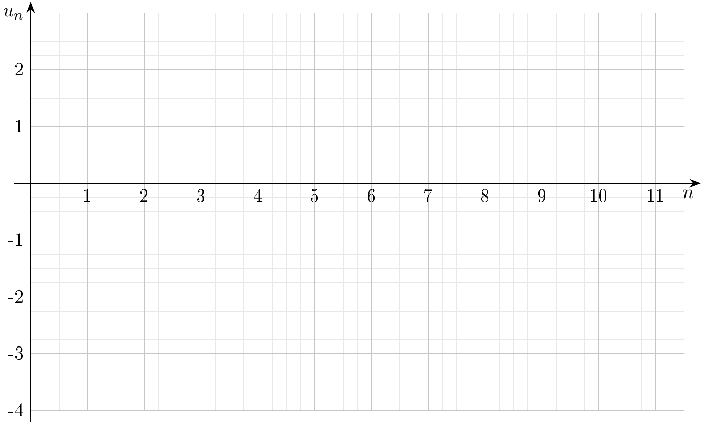

Cours
Première STMG · Chapitre 11 — Évaluation 2026/2027 · cours de Frederik de Peyrelongue
Première STMG
DS n°1 — Généralités sur les suites
Sujet A Durée : 1 h
Soit $(u_{n})$ la suite définie par :
\[
\begin{cases}
u_{0}=0\\
u_{n+1}=u_{n}^{2}-2, & \forall n\geqslant1
\end{cases}
\]
- Sous quelle forme est définie la suite $(u_{n})$ ? Justifier votre réponse.
- Calculer $u_{1}$, $u_{2}$, $u_{3}$, $u_{4}$. Pour chaque terme, donner la formule utilisée.
- Représenter la suite $(u_{n})$ dans le repère ci-dessous.
- La suite $(u_{n})$ est-elle monotone ? Justifier.

Soit $(u_{n})$ la suite définie par $u_{n}=5n-3$ pour tout entier $n$.
- Calculer les $4$ premiers termes de la suite $(u_{n})$.
- Quelle conjecture peut-on émettre sur le sens de variation de la suite $(u_{n})$ ?
Prouver la conjecture.
- Calculer $u_{n+1}$.
- Calculer $u_{n+1}-u_{n}$.
- Conclure.
Soit $(u_{n})$ la suite définie par $u_{n}=n^{2}$ pour tout entier $n$.
- Calculer les $4$ premiers termes de la suite $(u_{n})$.
- Quelle conjecture peut-on émettre sur le sens de variation de la suite $(u_{n})$ ?
Prouver la conjecture.
- Montrer que $u_{n+1}=n^{2}+2n+1$.
- Calculer $u_{n+1}-u_{n}$.
- Conclure.